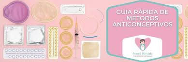

Prevención ante los embarazos adolescentes
La mejor manera de prevenir un embarazo y las enfermedades de transmisión sexual (ETS) es usar un método anticonceptivo y condón al mismo tiempo. Cuando llegue el momento, puedes enseñarle a tu hijo/a adolescentes para qué sirven, cómo funcionan y cómo usar los anticonceptivos y el condón.Al principio puede ser un poco incómodo hablar sobre anticonceptivos y embarazo, o sobre cualquier tema relacionado con el sexo. Lo mejor es reconocer la incomodidad, por ejemplo diciendo algo como: “sé que puede ser incómodo hablar de esto, pero te amo y me importas mucho, y por eso necesitamos hablar de cosas importantes como estas”. Lo cierto es que hablar sobre estos temas es más fácil con la práctica.
La estrategia del UNFPA para prevenir el embarazo adolescente se basa en asegurar el acceso a servicios e información en salud sexual y reproductiva, incluyendo el uso de los anticonceptivos modernos y limitar el matrimonio antes de los 18 años de edad. Igualmente, trabaja conjuntamente con los gobiernos en la región para que incluyan dentro de sus presupuestos y políticas la inversión en juventud, que asegure el desarrollo pleno del potencial de las y los adolescentes y jóvenes.
La única forma segura de evitar el embarazo es no tener relaciones sexuales vaginales.
Si decides tener relaciones sexuales vaginales, los métodos anticonceptivos pueden ayudar a prevenir el embarazo. Hay muchos tipos de anticonceptivos que funcionan de diferentes maneras. Tu profesional de la salud puede ayudarte a elegir el mejor método anticonceptivo para ti.
Los condones son el único método anticonceptivo que protege contra las ITS. Pero los condones por sí solos no son el método anticonceptivo más eficaz. Es más seguro usar condones con otro método anticonceptivo para prevenir tanto las ITS como el embarazo.
Muchos de estos obstáculos están siendo superados gracias a una educación necesaria en igualdad de género y políticas que empoderan a las mujeres y defienden sus derechos en la sociedad. Estas acciones buscan transformar tradiciones, roles sociales y mejorar la situación socioeconómica de las mujeres.
Para prevenir el embarazo adolescente, algunas de las medidas más efectivas son:
- Ofrecer programas de concienciación sobre la prevención del embarazo, dirigidos a jóvenes y sus familias.
- Fomentar una educación sexual integral en las escuelas que no solo advierta sobre los riesgos del embarazo en la adolescencia, sino también sobre las enfermedades de transmisión sexual.
- Sensibilizar a las familias sobre la importancia de la prevención y enseñarles a reconocer los primeros signos de embarazo en adolescentes, para que puedan actuar rápidamente.
- Promover el empoderamiento de las mujeres, alentándolas a ejercer plenamente sus derechos en la sociedad.
- Impulsar programas de Salud Pública que ofrezcan apoyo y recursos a las adolescentes para prevenir embarazos no deseados.
- Difundir y ofrecer métodos anticonceptivos, asegurando que los adolescentes tengan acceso a opciones seguras y efectivas para evitar embarazos no planificados.
Estas medidas no solo buscan prevenir el embarazo adolescente, sino también crear un entorno donde las mujeres jóvenes puedan tomar decisiones informadas y vivir una vida plena y sin barreras.